正文: 拒绝钓鱼，回答里的脸脸全部打上了彩虹码 ，喜欢的话欢迎大家来微博找我玩，微博：你醋醋。
【干货】流量预警
女生日常搭配的两点法则：
1.风格统一
2.色彩和谐
球鞋并不是什么特殊单品，基本上按照了上两点搭配都不会出错的。
1.风格统一并不是要求球鞋必须搭配街头/运动/休闲风格，而是根据球鞋本身的风格特质来搭配全身，或者是根据你今天的穿着风格来搭配球鞋。这取决于你今天是否把全身的搭配核心放在球鞋上。
举个糖炒栗子：
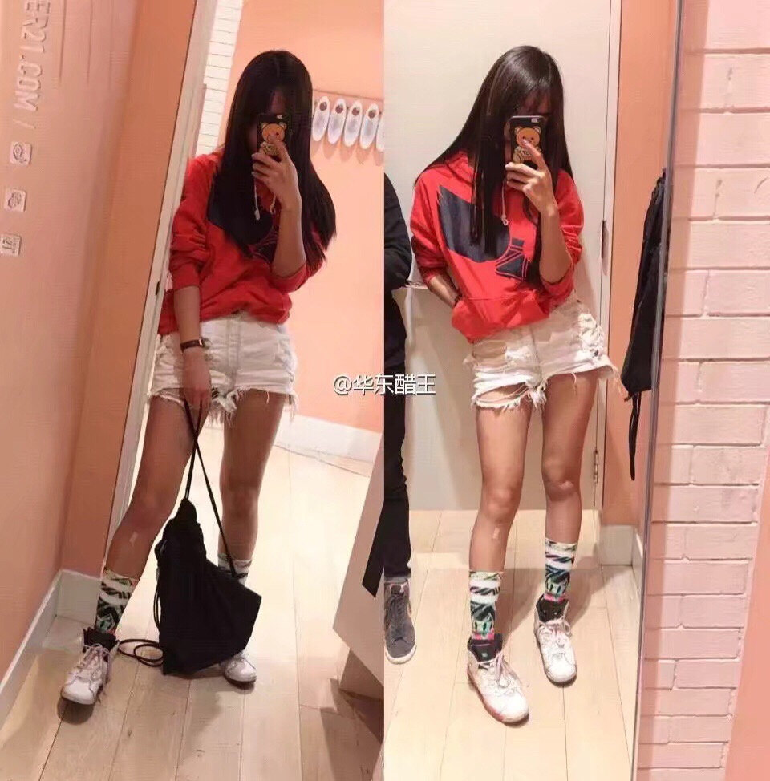
上衣：nike
短裤：bershka
袜子：stance
抽绳包：nike
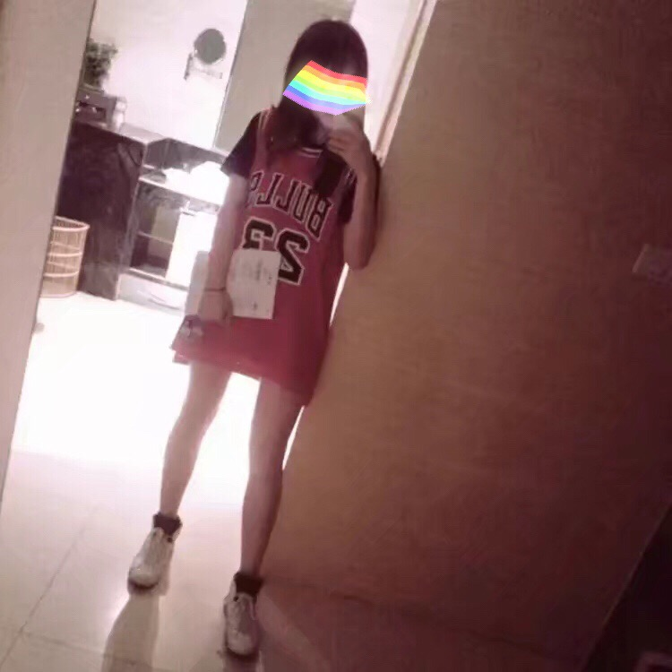
（我弟弟的球衣！）
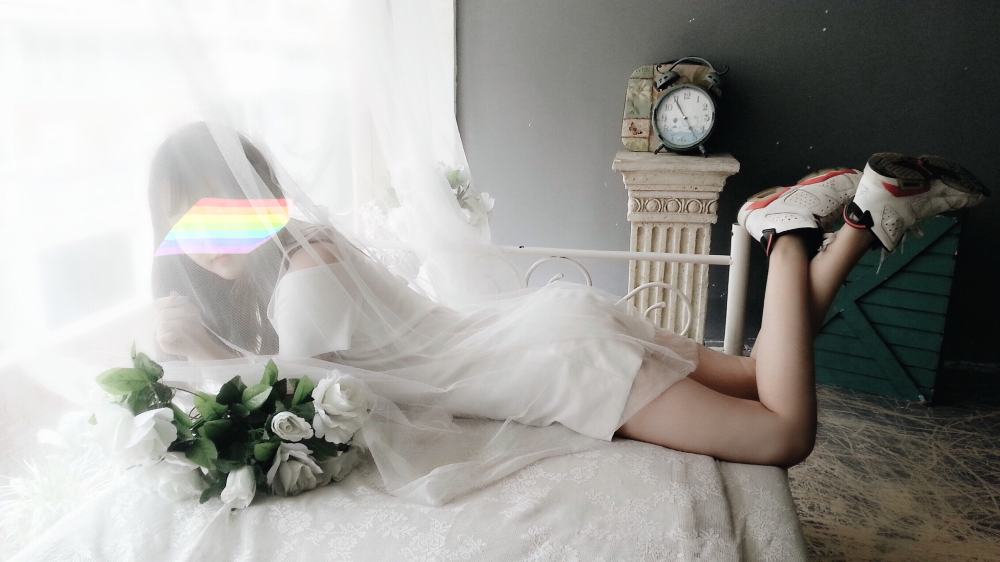
（连体裤：zara）
同一双乔六，在三种搭配中处在了不同的地位，p1搭配其实太复杂了，弱化了球鞋的存在感，p2搭配没有p1那么繁琐，但是球衣的出现太醒目了，球鞋只能作为一个陪衬，而p3整体搭配简单，明显是以白球鞋为亮点而搭配的，忌讳的就是一身搭配中亮点太多太杂，失去了主次。
再举个糖炒栗子
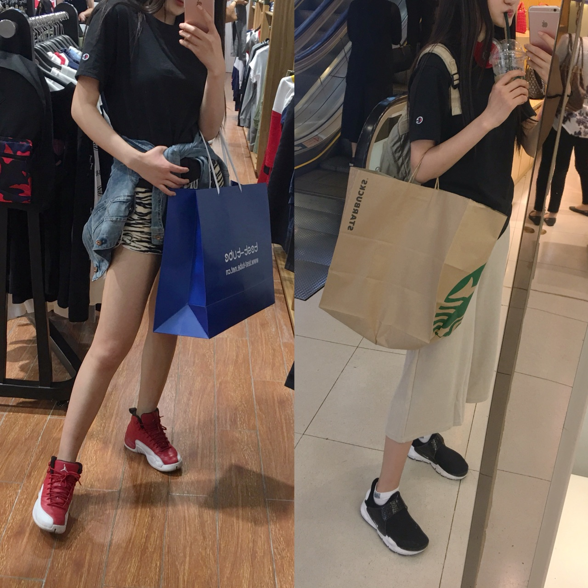
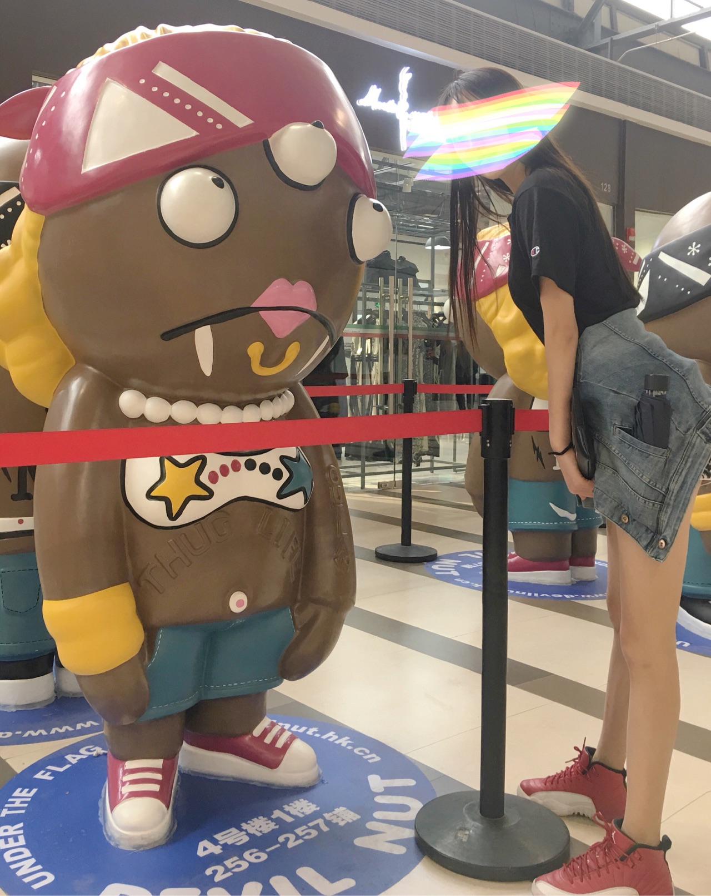
上衣：champion
裤子：topfeeling
外套：edc
两套全身搭配算是比较简单的，但是单品风格迥异，红白和sockdart的搭配就起了决定造型风格的关键。
再问，如何搭配不同风格？
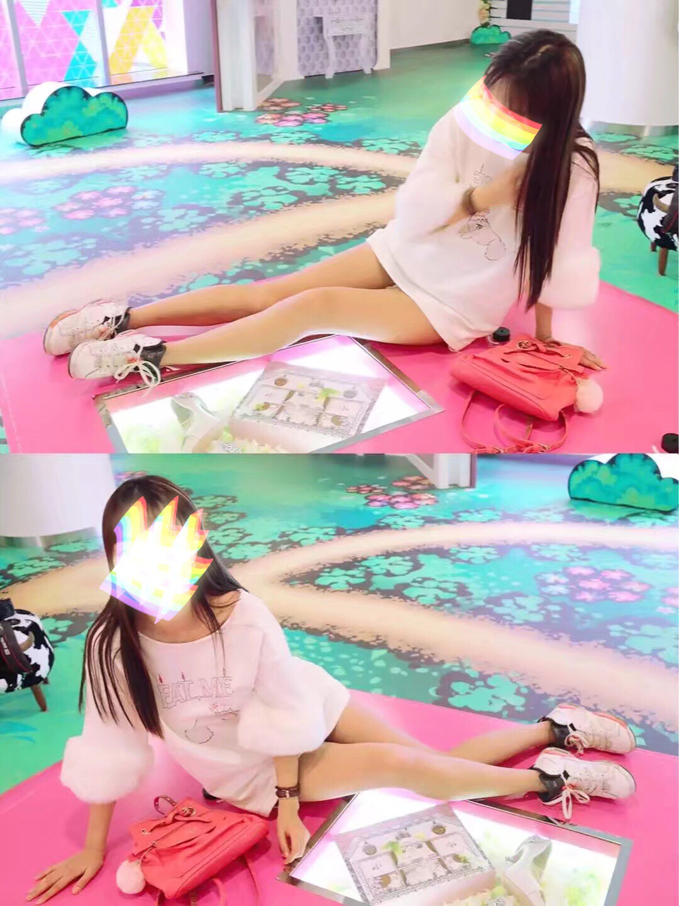
上衣：Girlish Aroma
包包：samantha thavasa
还是那双乔六，因为我上衣和包包的亮点都聚在毛毛袖子和包上的毛球，鞋子作为最次要的搭配，并没有影响温温油油毛茸茸的风格，只作为一双“小白鞋”而存在了。
2.色彩和谐
这点我相信大家都明白，而色彩和谐也是分为两点而言，首先是统一，其次是跳跃。
统一是什么？是颜色相近或者相同，或者是色系搭配的和谐统一。说白了就是一样shai！
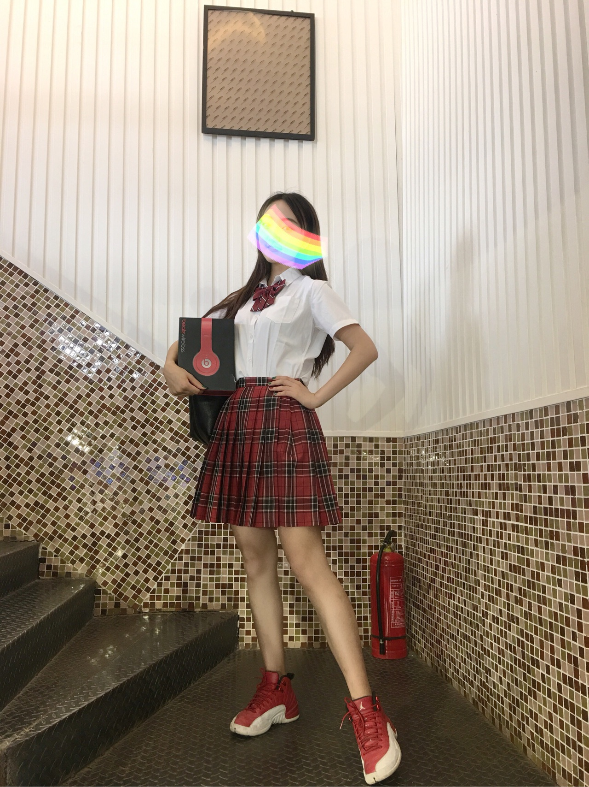
红红火火，就算是jk制服x球鞋也不会违和！
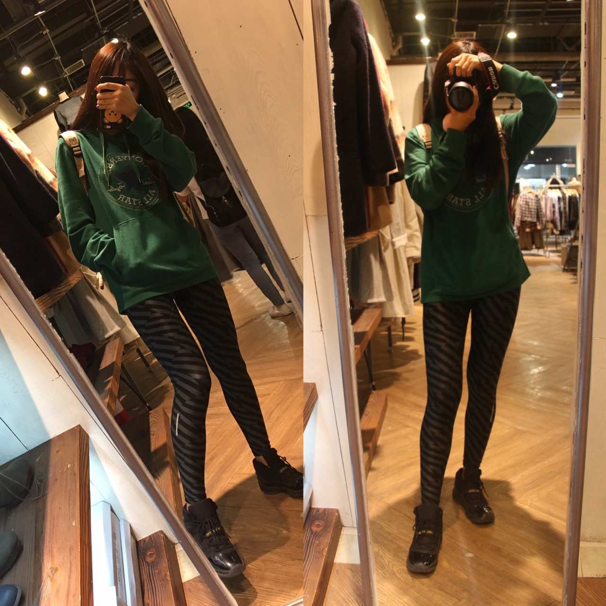
卫衣：converse
legging：nike
双肩包：kippling
这个卫衣本来是有点oversize的，但是因为拍照角度的问题显得比较短，虽然上衣是绿色的，但是11伽马蓝以黑色为主，只用蓝色作为点缀，所以黑蓝绿的搭配并不会突兀，总体是偏暗的，金属色的双肩包就成了最大的亮点。
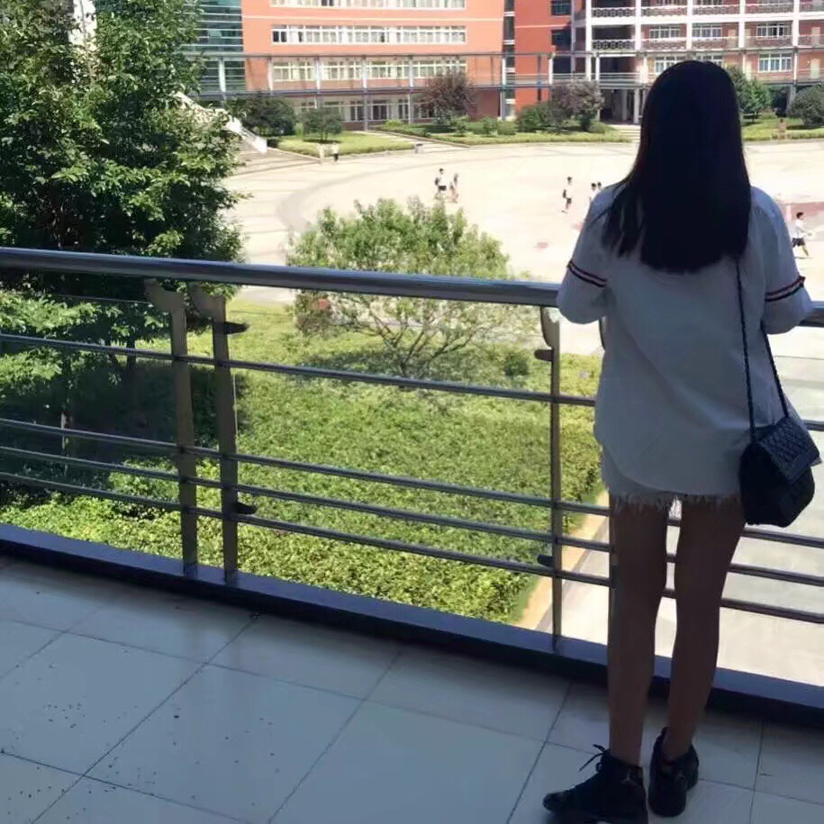
衬衫：thom browne
短裤：bershka
包包：charles keith
这套就更明显得表现出来伽马蓝中蓝色存在感是有多低了…球鞋仅仅作为一个小黑鞋而存在了。
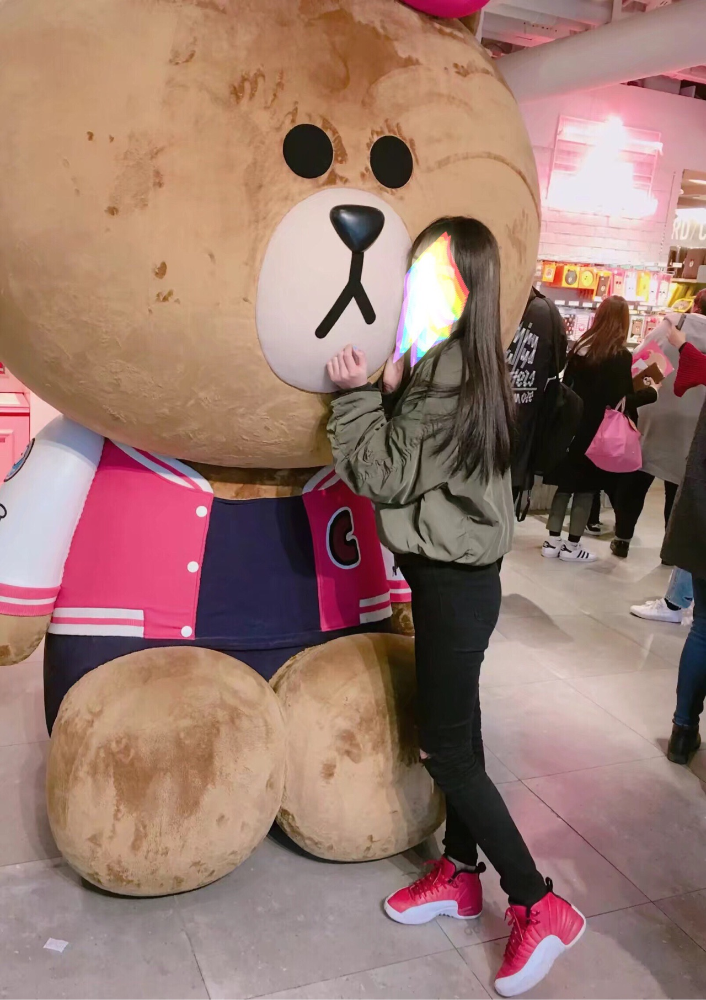
外套：Moussy
裤子：H&M
旋转跳跃我闭着眼！！你以为这就是单纯的吸引视线于鞋子上？
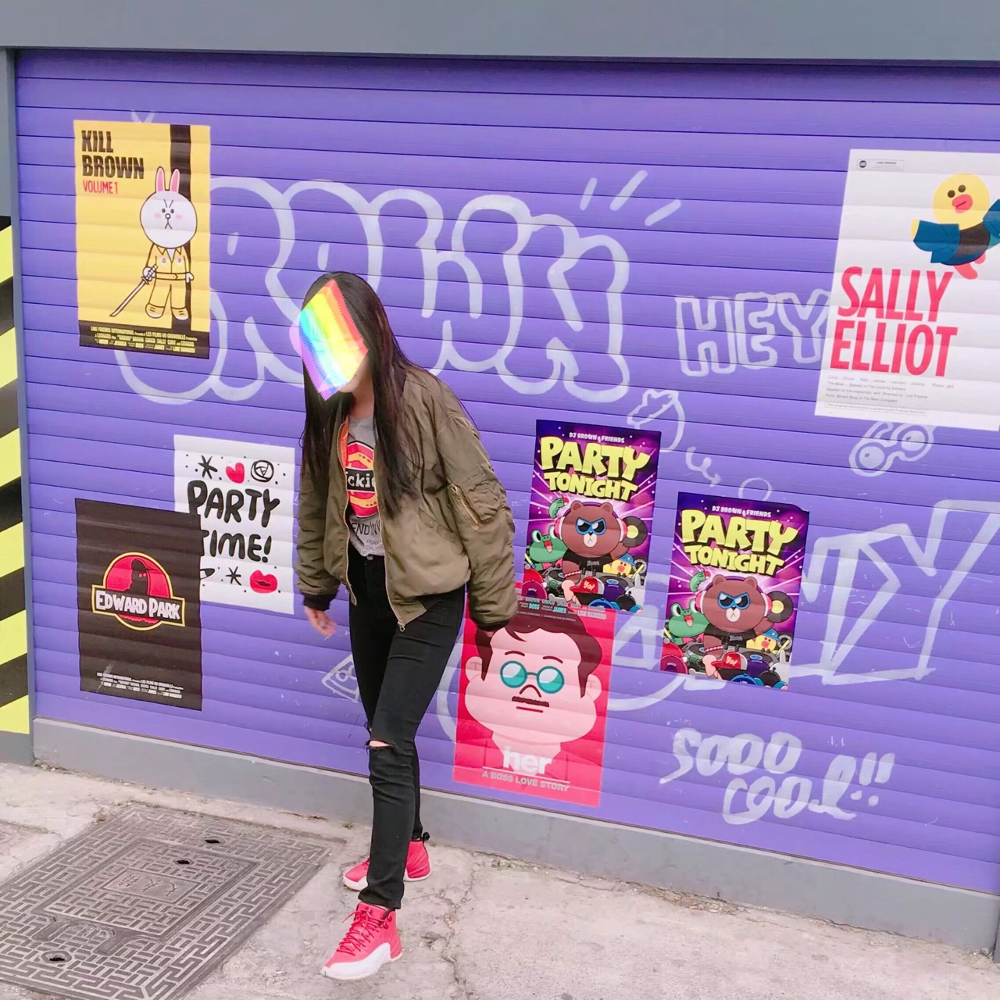
内搭：Dickies
色彩稍微复杂一点的内搭为什么能在昏昏沉沉的搭配里活泼起来而且不违和？因为有球鞋上呼应跳跃的红色。
既然是说给女生的，就再发几张裙子x球鞋的搭配，希望能给小姐姐们带来一点搭配灵感！
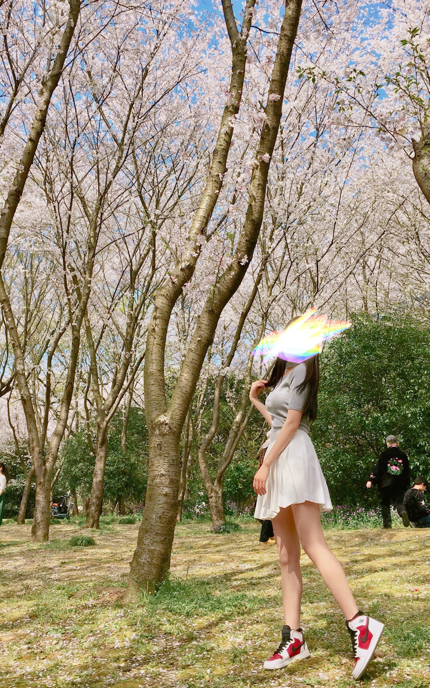

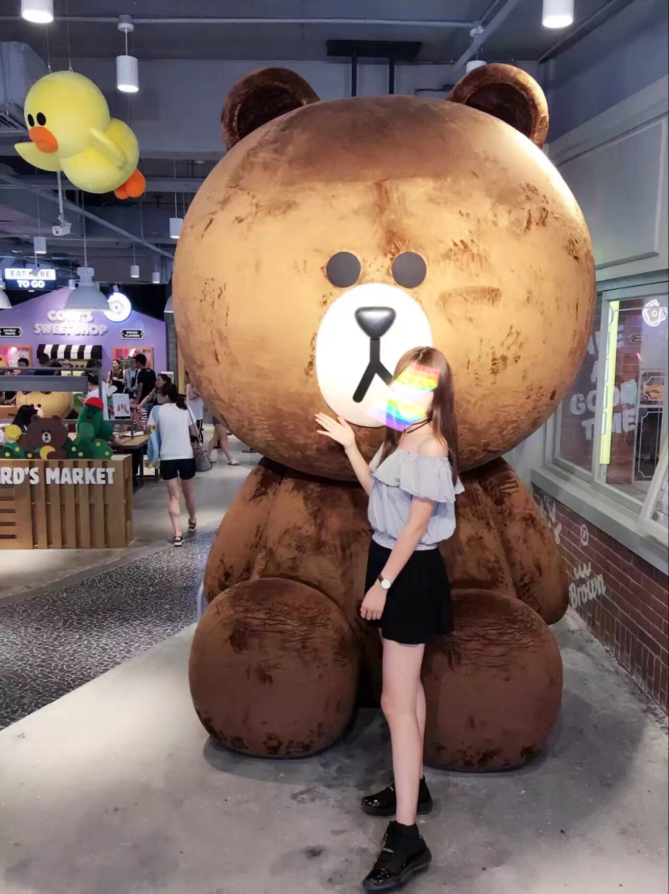
以上仅仅是我个人穿搭的看法，有什么其他想法或者意见欢迎大家指出来，虽然我不一定听么么哒！